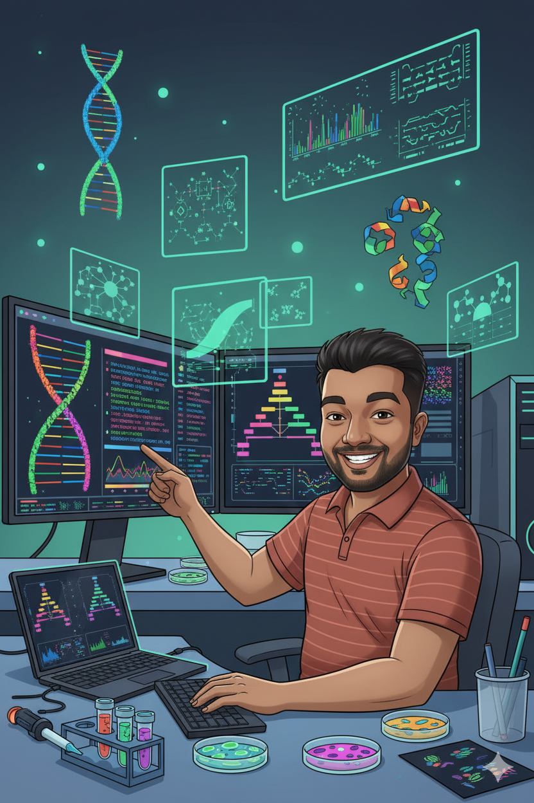

Bioinformatics Research Specialist
Experienced bioinformatics professional specializing in genomics, NGS analysis, and computational drug discovery. Leveraging machine learning and high-performance computing to decode complex biological mechanisms and advance precision medicine.
Get In Touch
CGPA: 9.1
CGPA: 8.4
Grade: A+
DOI: 10.1038/s41598-025-08653-4
Status: Accepted | Submitted: September 2025
DOI: 10.3390/jox15040101
DOI: 10.1016/j.gene.2024.148925
Developed machine learning models for designing Angiotensin-2 inhibitors. Deployed as a web application enabling researchers to predict drug compound efficacy through molecular structure analysis.
Created automated workflows for processing long-read sequencing data using Snakemake and Nextflow, significantly improving data processing efficiency for genetic research projects.
Conducted computational analysis to identify promising drug targets for SARS-CoV-2, contributing to COVID-19 research efforts through bioinformatics approaches.